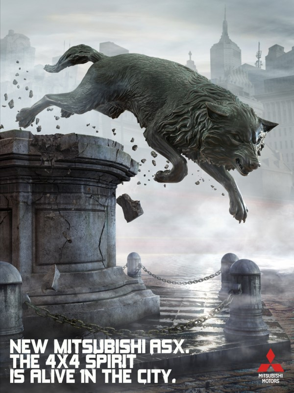
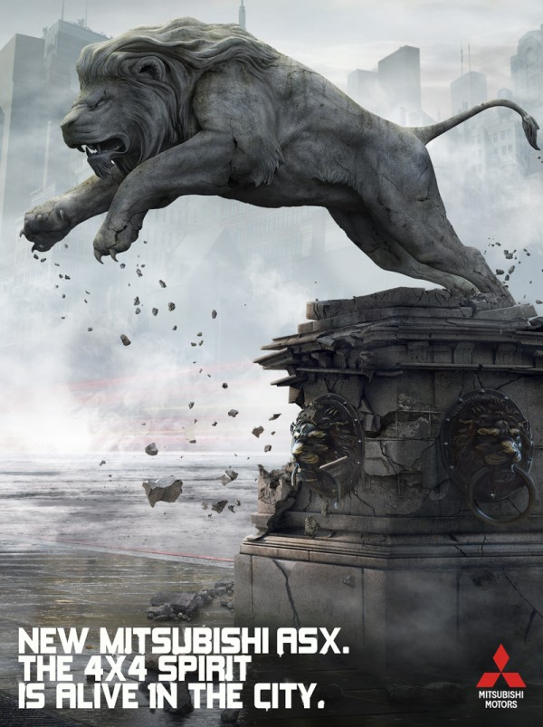
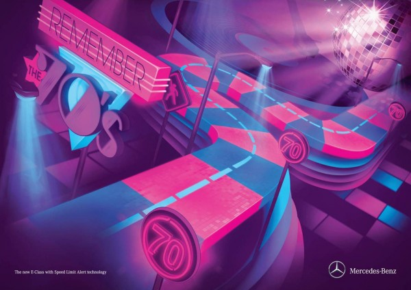
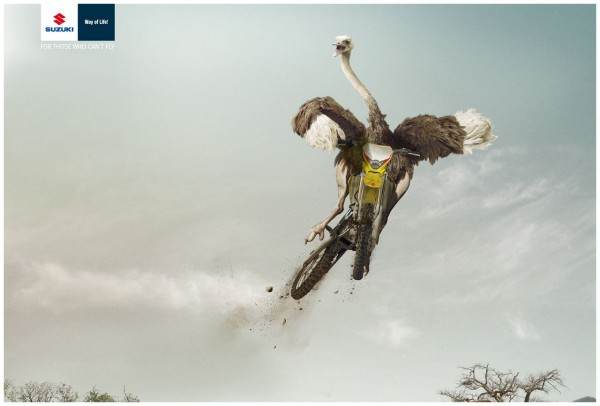
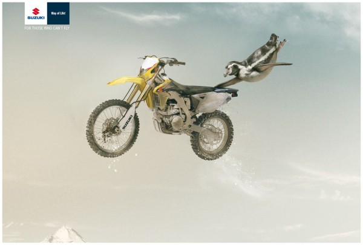
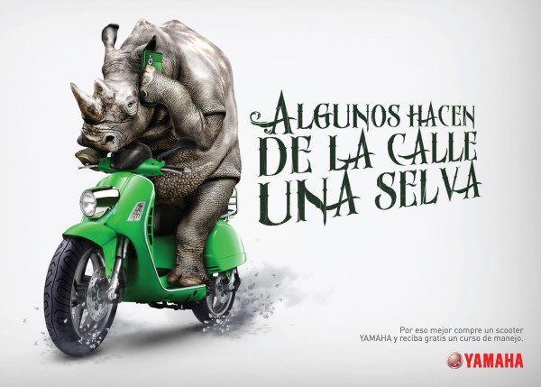
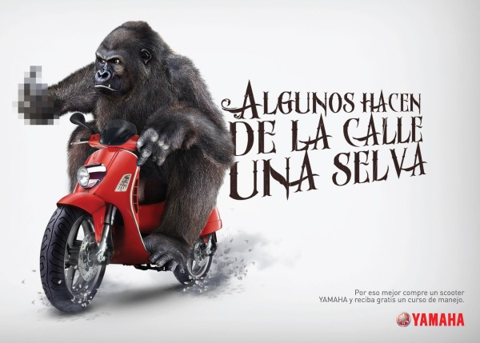
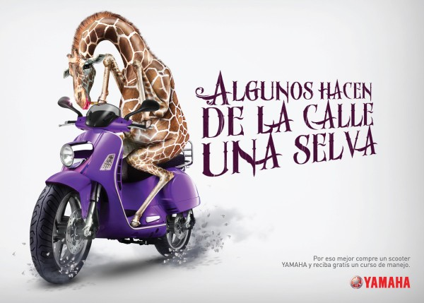

Сразу несколько автомобильных брендов запустили отметились в последние дни принтами достойными нашего внимания. Причём во всех кампаниях кроме Мерседеса героями принтов являются животные.
Mitsubishi
Слоган рекламной компании обновлённого городского кроссвовера Mitsubishi ASX можно перевести как «Дух внедорожника может жить и в городе». На принтах каменные лев и волк, которые оживают.


Mercedes
Немецкий бренд рекламирует новую технологию доступную в E-классе. Автомобиль Мерседес теперь умеет еще и читать. Установленная не нём камера сканирует дорожные знаки и при обнаружении знака ограничения скорости снижает обороты двигателя.
Реклама стилизована под три эпохи в музыке.



Suzuki
Чилийское агенство DDB создало для Suzuki рекламную компанию со слоганом «Для тех кто не умеет летать». Две самые известные птицы, не умеющие летать приняли участие в фотосессиях.


Yamaha
И наконец агентство Smart сравнивает некоторых водителей с обитателями джунглей и рекомендует им подучиться для начала водить скутер Yamaha.


